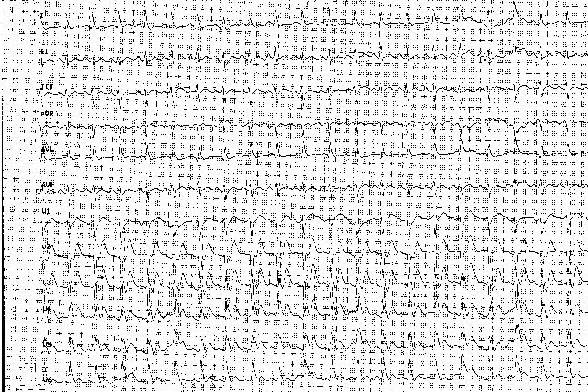
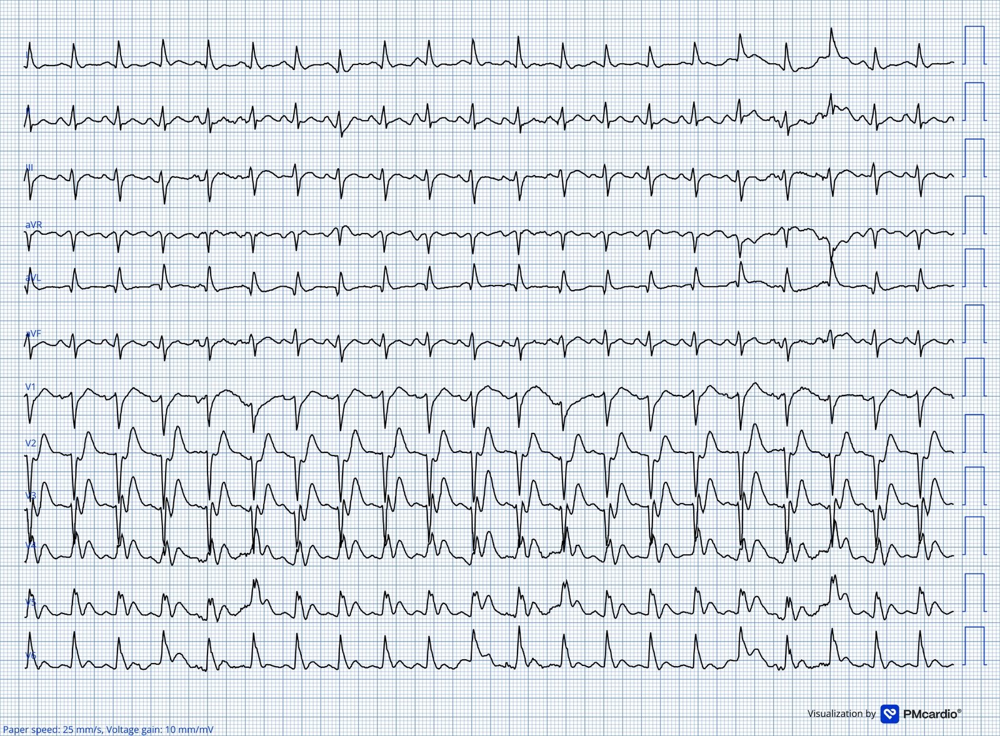
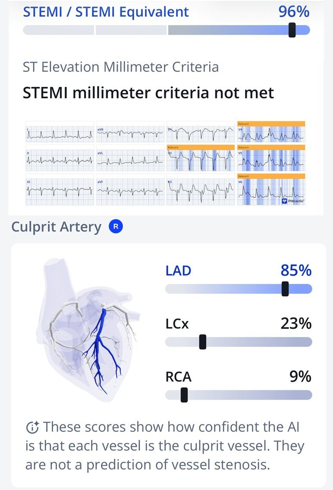
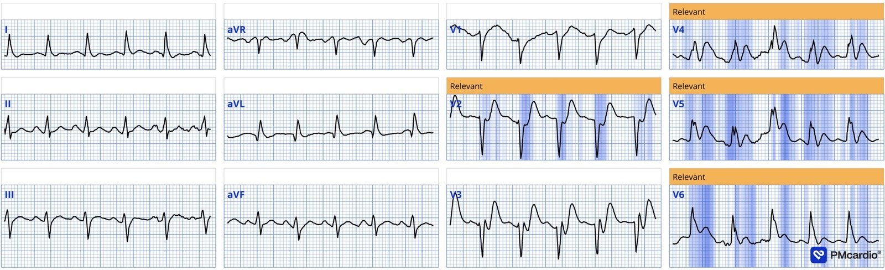
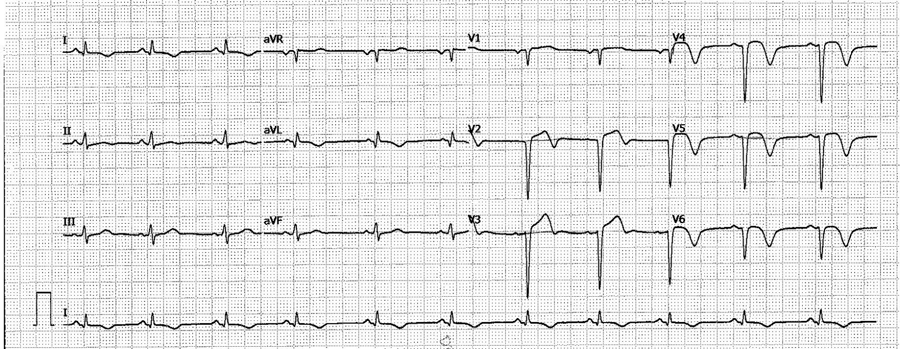
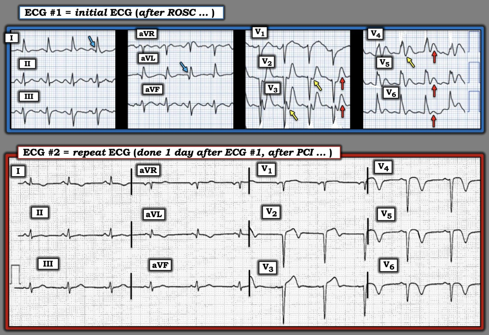

21/09/2026 — Bệnh nhân sau tái lập tuần hoàn tự nhiên (ROSC) với một hình ảnh điện tâm đồ bất thường!
Bản dịch tiếng Việt của bài "A Post-ROSC Patient with an unusual ECG Pattern!" – Dr. Smith’s ECG Blog. Giữ nguyên toàn bộ 6 hình ảnh của bản gốc.
Tác giả: Magnus Nossen.
Một người đàn ông 52 tuổi được đội cấp cứu ngoài viện (EMS) phát hiện trong tình trạng rất nguy kịch, vã mồ hôi và lú lẫn. Ít phút sau, ông gục xuống và được xác định đang ở trong nhịp nhanh thất vô mạch. Ông được hồi sức, đặt nội khí quản và khử rung thành công, có lại nhịp tưới máu. Điện tâm đồ dưới đây được ghi ngay sau khi tái lập tuần hoàn tự nhiên (ROSC), bạn nghĩ gì?
Điện tâm đồ #1


Điện tâm đồ #1 đã số hóa


Điện tâm đồ cho thấy nhịp nhanh đều, tần số khoảng 125 lần/phút, với sóng P xoang rõ. Thời gian QRS kéo dài, 134ms, và có chậm dẫn truyền kiểu LBBB.
Tuy nhiên! Đây không phải là một hình ảnh LBBB đơn thuần, không biến chứng!
Ở các chuyển đạo V1–V3, điểm J và đoạn ST chênh xuống (ST chênh xuống đồng hướng) — trong khi với LBBB, ở các chuyển đạo này lẽ ra phải có ST chênh lên nghịch hướng một cách phù hợp. Ngược lại, các chuyển đạo bên lại cho thấy điểm J đẳng điện một cách không phù hợp, kèm sóng T tối cấp nổi bật, thay vì đoạn ST chênh xuống nghịch hướng như mong đợi. Với người đọc có kinh nghiệm, điện tâm đồ này có giá trị chẩn đoán tắc cấp LAD.
_______
Smith: ST chênh xuống đồng hướng chỉ ở một chuyển đạo trong V1-V3 đã thỏa tiêu chuẩn Sgarbossa cải biên theo Smith cho OMI. Và điều này thường gợi ý OMI thành sau, như trong ca sau:
Acute chest pain with LBBB and obvious OMI, worsening on serial ECGs, but repeatedly missed by physicians and Marquette 12SL
_______
Điểm J chênh xuống kèm sóng T tối cấp đã được ghi nhận ở khoảng 2% bệnh nhân tắc cấp LAD. Hình ảnh này được gọi là sóng T de Winter (deWinter T waves) (dù ban đầu không phải do deWinter mô tả). Nếu bạn chưa quen với hình ảnh điện tâm đồ này, hãy xem tuyển tập các ca bệnh này.
Gần như mọi lần tôi gặp hình ảnh đặc trưng này, nó đều đi kèm phức bộ QRS hẹp. Chỉ thỉnh thoảng tôi mới thấy điểm J chênh xuống kèm sóng T tối cấp trên nền rối loạn dẫn truyền RBBB. Hai trong số các ví dụ đó đã được ghi lại trên Dr. Smith’s ECG Blog (Xem tại đây và tại đây).
Điện tâm đồ hôm nay là ví dụ đầu tiên tôi gặp về LBBB có chồng thêm hình thái sóng T de Winter. Có vẻ đây là một hình ảnh phối hợp hiếm gặp!
Smith: Tôi đồng ý. Tôi chưa từng thấy điều này trước đây: LBBB kèm hình ảnh de Winter.
Tôi đã gửi điện tâm đồ này cho Queen of Hearts. Queen of Hearts Now FDA Approved!! What’s her take on this “Non-diagnostic” ECG?
Mặc dù mô hình Queen chưa được huấn luyện riêng để nhận diện chính xác hình ảnh phối hợp này — nó vẫn phân loại bản ghi này là OMI đang tiến triển/tương đương STEMI, với xác suất đầu ra là 0.96. Điều này đáng chú ý vì thuật toán đã nhận diện thành công một hình ảnh rất đáng lo ngại mà không cần được huấn luyện trên nhiều điện tâm đồ có sự phối hợp hình ảnh này (LBBB + sóng T de Winter). Hơn nữa, Queen còn nhận ra rằng đây KHÔNG phải OMI thành sau, mà là thành trước do tắc LAD!


Ở đây bạn có thể thấy rõ hơn:


Không rõ điện tâm đồ ban đầu hôm nay có được nhận ra là tắc cấp LAD hay không. PCI được thực hiện trong bối cảnh sống sót sau ngừng tim và sốc tim — khi đó quyết định tiến hành chụp mạch vành khẩn có thể chủ yếu dựa trên tình trạng mất ổn định lâm sàng hơn là dựa trên các dấu hiệu điện tâm đồ (điều này tất nhiên là phù hợp — vì hội chứng vành cấp (ACS) được cho là nguyên nhân của ngừng tim và sốc tim).
Chụp động mạch vành cho thấy tắc cấp 100% đoạn gần LAD. Kèm theo một nhánh chéo thứ 2 lớn bị tắc mạn tính. Tổn thương thủ phạm ở LAD đã được điều trị thành công. Troponin-I quy ước ban đầu là 43ng/L, sau đó tăng lên 3600ng/L (nhưng không được đo tới đỉnh).
Điện tâm đồ dưới đây được ghi một ngày sau PCI. Nó cho thấy mất sóng R ở vùng trước tim cùng sóng T đảo ngược (TWI) theo kiểu tái tưới máu. Blốc dẫn truyền LBBB nay đã hết sau tái thông mạch.


Bệnh nhân được xuất viện với chẩn đoán STEMI, mặc dù điện tâm đồ không cho thấy ST chênh lên đủ tiêu chuẩn chẩn đoán. LVEF lúc xuất viện là 45%, và điều trị suy tim theo hướng dẫn đã được khởi động.
Do có sóng Q lan rộng ở các chuyển đạo trước tim sau PCI, LVEF ở giai đoạn cấp có thể không phản ánh chính xác chức năng tâm thu thất trái về lâu dài. Hình ảnh điện tâm đồ phù hợp với một nhồi máu thành trước diện rộng đã hoàn tất. Có nguy cơ tái cấu trúc thất trái bất lợi về sau, và tôi nghi rằng LVEF khi theo dõi có thể đã giảm đáng kể. Đáng tiếc là không có dữ liệu hình ảnh hay lâm sàng theo dõi.
Nhìn chung, bệnh nhân trong ca hôm nay đã được xử trí phù hợp bằng PCI khẩn. Tuy nhiên, nếu bệnh cảnh ít kịch tính hơn, chẳng hạn ổn định huyết động và chỉ đau ngực — thì không chắc bệnh nhân sẽ được chấp nhận chụp động mạch vành ngay lập tức.
Điểm cần học:
- Các hình ảnh điện tâm đồ chỉ điểm OMI có thể mang nhiều hình thái. Bạn cần trở thành chuyên gia đọc điện tâm đồ và/hoặc sử dụng Queen of Hearts nếu muốn nhận diện những bệnh nhân cần PCI cấp cứu.
- Hình ảnh sóng T de Winter có thể gặp cùng với LBBB.
= = =
==================================
BÌNH LUẬN CỦA TÔI, bởi KEN GRAUER, MD (21/9/2026):
Tôi cũng có chung sự hứng thú như Dr. Nossen với điện tâm đồ ban đầu hôm nay — ở chỗ nó dường như là một hình ảnh phối hợp hiếm gặp của LBBB + sóng T de Winter.
- Như Dr. Nossen đã nêu — không rõ liệu các nhân viên y tế có nhận ra tắc cấp đoạn gần LAD từ điện tâm đồ ban đầu này hay việc thông tim khẩn được thực hiện là do bệnh nhân bị ngừng tim, sốc tim và tình trạng mất ổn định lâm sàng kéo theo.
Thú nhận: Tôi hoàn toàn thừa nhận rằng lúc đầu tôi đã bối rối với điện tâm đồ ban đầu hôm nay — chủ yếu vì nhịp nhanh rõ rệt khiến các QRS chồng lấp ở các chuyển đạo V2,V3,V4 — cũng như vì QRS ở các chuyển đạo chi trông không đủ rộng để xếp vào LBBB (Trước khi số hóa — tôi tưởng mình đang nhìn thấy các sóng J thiếu máu cục bộ khổng lồ ở chuyển đạo V4 chứ không phải QRS giãn rộng do LBBB).
- Xin nhấn mạnh: Việc phân biệt giữa LBBB + sóng T de Winter với “một điều gì khác” — chỉ mang tính học thuật, vì chỉ định thông tim khẩn kèm PCI là rõ ràng ở bệnh nhân bệnh nặng nguy kịch sau ngừng tim, đang sốc tim này.
- Dù vậy — tôi nghĩ cũng đáng để xem kỹ hơn điện tâm đồ ban đầu hôm nay sau khi xóa trắng các chuyển đạo trước tim chồng lấp gây rối mắt — rồi so sánh bản ghi này với điện tâm đồ ghi lại (như tôi làm trong Hình 1 sau khi chuyển điện tâm đồ ban đầu sang cùng định dạng khổ ngang như điện tâm đồ ghi lại).
= = =
Điện tâm đồ ban đầu hôm nay:
Các chuyển đạo V4 và V5 xác nhận QRS rộng ở điện tâm đồ #1, dù điểm khởi đầu và kết thúc của QRS không dễ xác định ở các chuyển đạo khác.
- QRS giãn rộng, chủ yếu âm ở các chuyển đạo trước, kết hợp với QRS dương hoàn toàn ở các chuyển đạo trước tim bên V5,V6 là phù hợp với LBBB.
- Bình thường — không có sóng Q ở các chuyển đạo bên khi có LBBB (vì hướng khử cực vách ban đầu bị LBBB đảo ngược — và do đó đi từ phải sang trái). Vì vậy, việc thấy sóng Q ở chuyển đạo I và aVL (mũi tên XANH LAM ở các chuyển đạo này) là dấu hiệu sớm của nhồi máu vách đang diễn tiến.
- Thay vì một mức ST chênh lên nghịch hướng tương xứng như mong đợi ở các chuyển đạo trước khi có LBBB — sóng ST-T ở chuyển đạo V2,V3 chênh lên không tương xứng trên điện tâm đồ #1 — và ST chênh lên này trở nên đồng hướng một cách không phù hợp (cùng chiều) với QRS dương ở các chuyển đạo trước tim bên V4,V5,V6 (mũi tên ĐỎ ở 5 chuyển đạo trước tim này).
- Và — có điểm J chênh xuống ở một số chuyển đạo trước tim kèm sóng T tối cấp (mũi tên VÀNG).
- Nhận định: Các yếu tố của sóng T kiểu de Winter hiện diện rõ trên điện tâm đồ ban đầu hôm nay: i) Sóng T tối cấp quá lớn ở các chuyển đạo trước tim phía trước (do có LBBB — các sóng T tối cấp này kéo dài suốt vùng trước tim tới cả chuyển đạo V6, một chuyển đạo mà bình thường sóng T không bao giờ dương khi có LBBB); — và, ii) Khởi đầu của các sóng T tối cấp dốc lên nhanh ở chuyển đạo trước tim này là điểm J chênh xuống (mũi tên VÀNG).
= = =
Hình 1: So sánh 2 điện tâm đồ trong ca hôm nay.


= = =
Điện tâm đồ ghi lại:
Bằng chứng cho các dấu hiệu sóng T kiểu de Winter nêu trên ở điện tâm đồ #1 — đến từ việc so sánh trong Hình 1 với điện tâm đồ ghi lại vào ngày hôm sau, sau khi tái tưới máu thành công đoạn gần LAD bị tắc cấp:
- Mất hoàn toàn sóng R ở tất cả các chuyển đạo trước tim trước đó có sóng T tối cấp kiểu de Winter.
- Sóng Q ở vùng bên cao tại chuyển đạo I và aVL được xác nhận.
- Nay thấy sóng T tái tưới máu lan rộng ở các vùng nhồi máu (tức là ở các chuyển đạo I,aVL; và từ V2 đến V6).
= = =
= = =